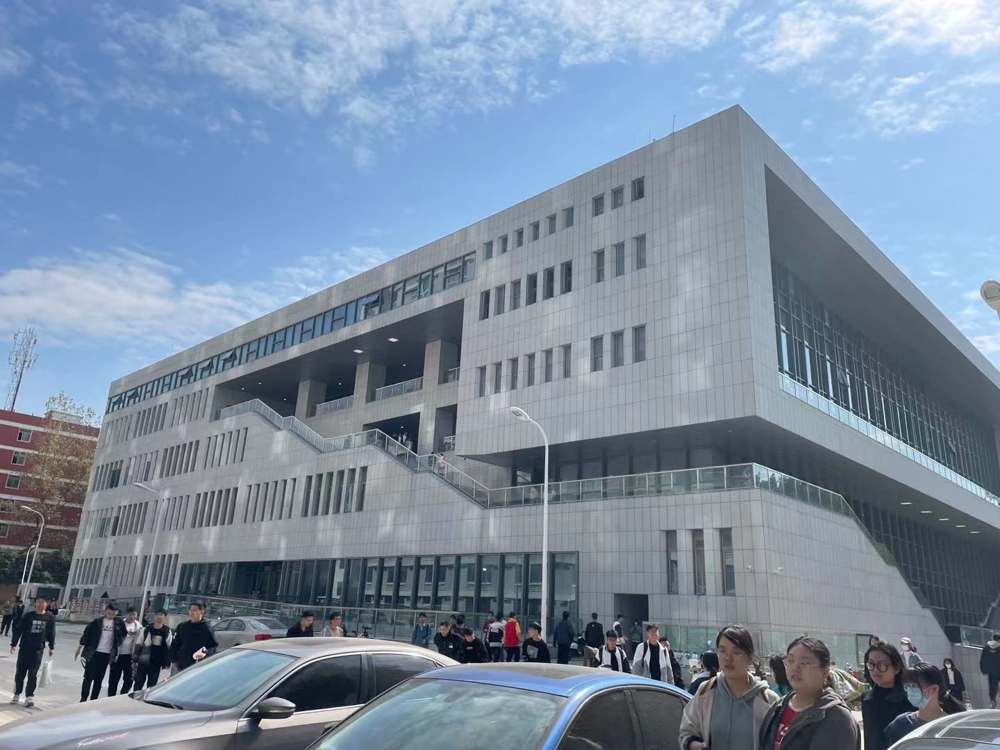
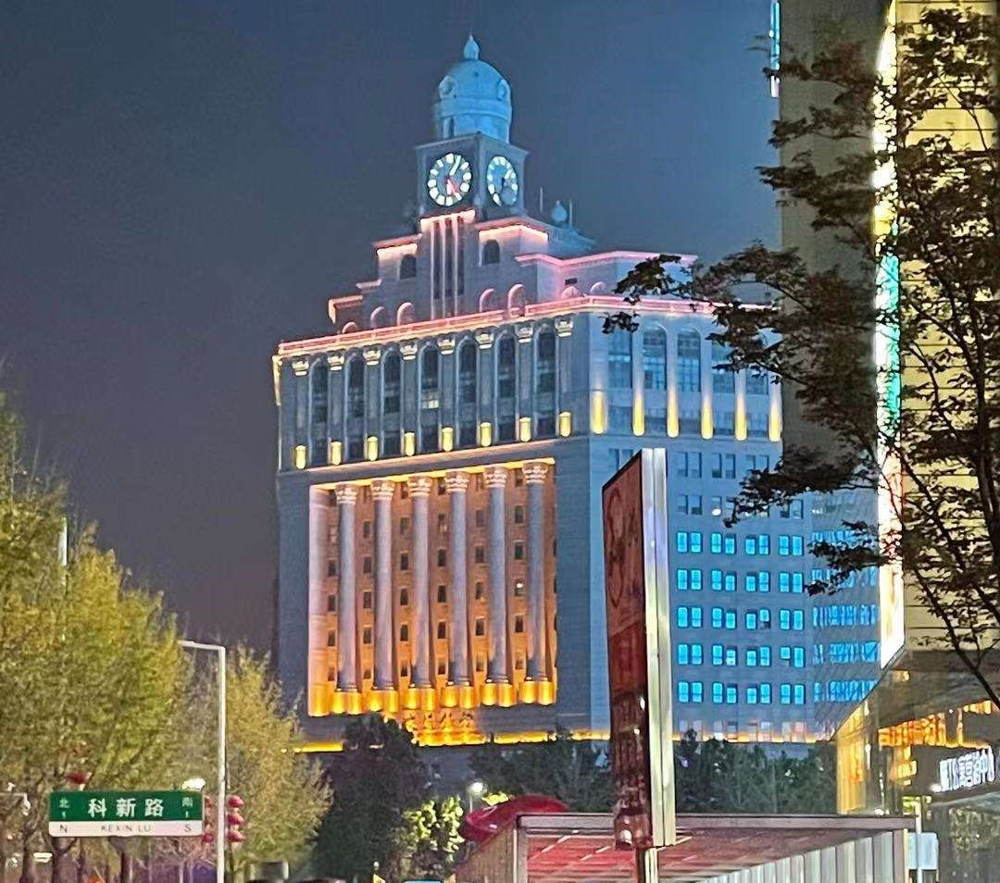
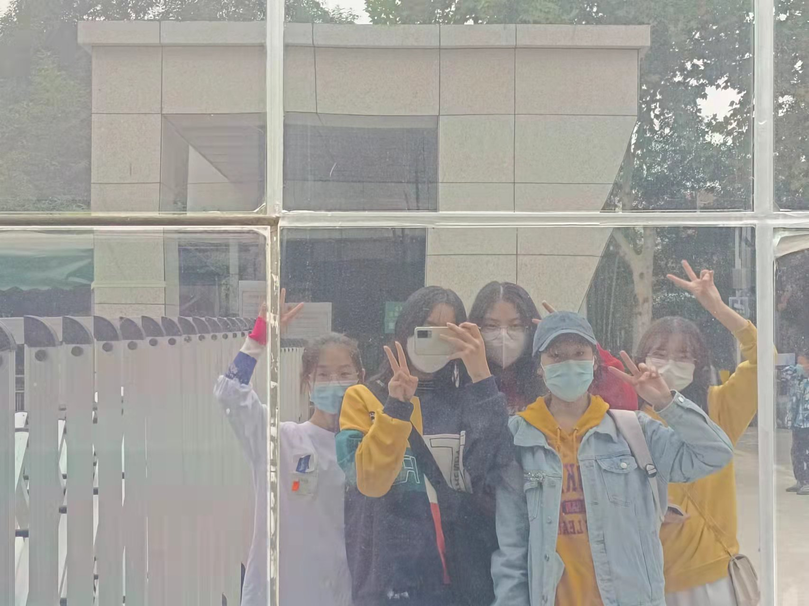
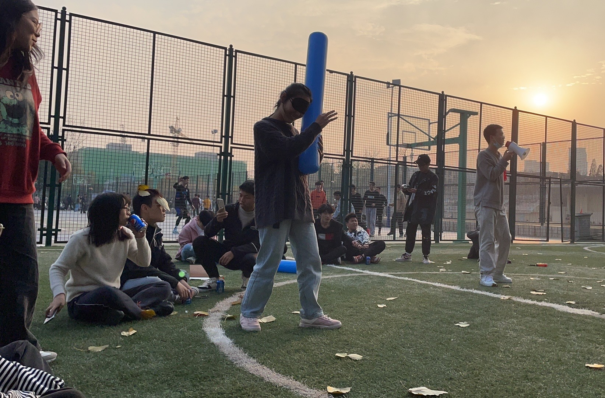
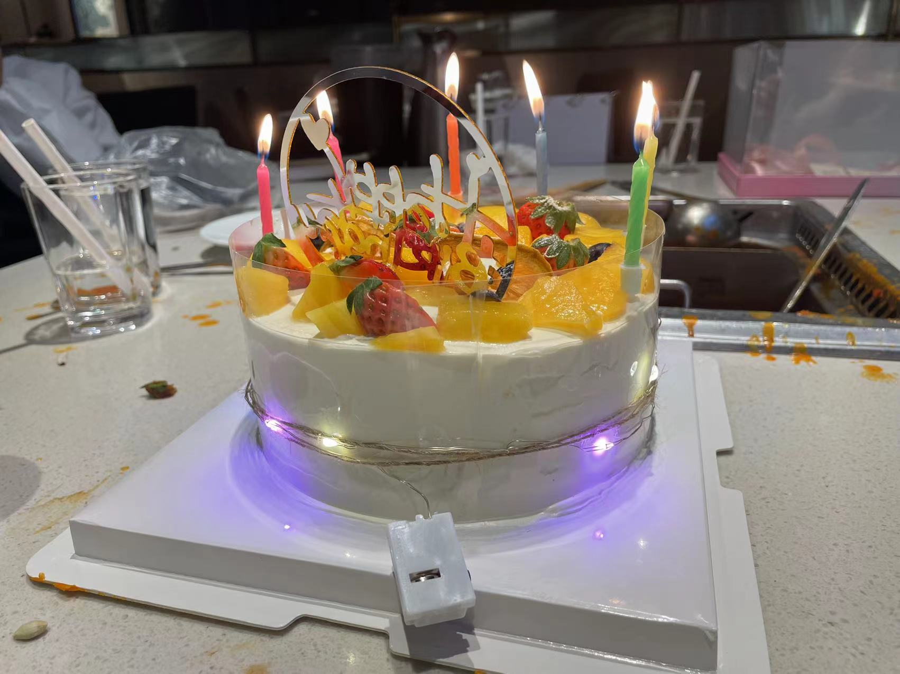
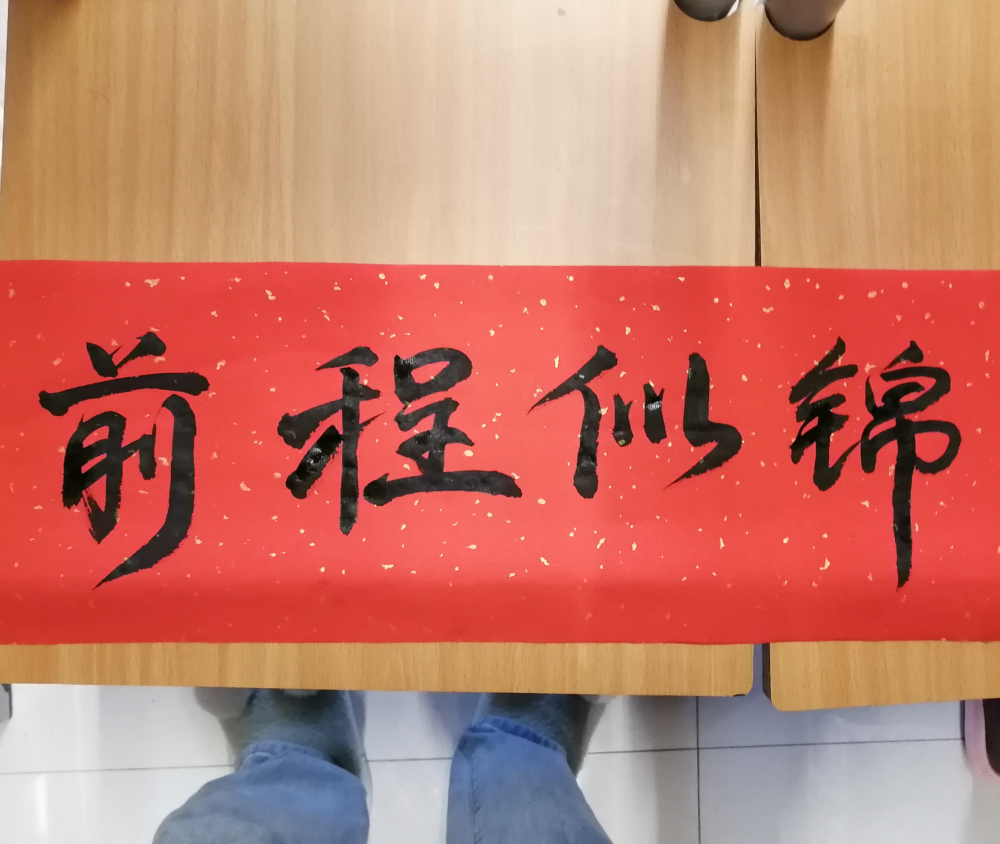
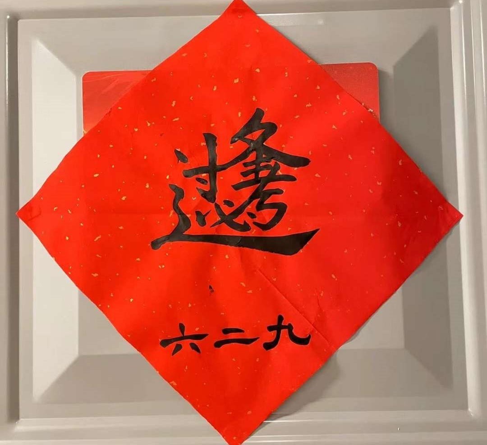

回到首页 ^_^
刚进入大学，第一次参加院里面的庆国庆活动，还拿了个二等奖 哈哈真不错 现在真的怀念在东风校区的每一天  大一封校以来第一次溜出校门出去happy  第二次外出参观河南自然博物院 ✌  班级校内第一次团建（蒲公英活动）的一天，边吃边玩（happy）  在大学第一次陪室友一起过生日，胡吃海喝的一天 非常的开心  将近寒假，我们开始在宿舍自己写春联，一起买材料，怎么说-就是非常的好看，很有感觉   是在餐厅四楼没人的地方自习的一天，从正午至夕阳落下，总结知识，奋力迎接即将到来的期中考试，最后-成绩也是挺不错的哈哈 记录大学生回家当疫情志愿者，每天经受刺骨的寒风与持久的站立，为乡镇居民把好安全第一关 but 真的冻脚 每天也都有在好好运动哦 和班里同学一同打乒乓球、羽毛球的晚上 运动真的会使人放松 班里同学相处的也不错，很和睦，我真的很喜欢这种氛围
——持续更新中——